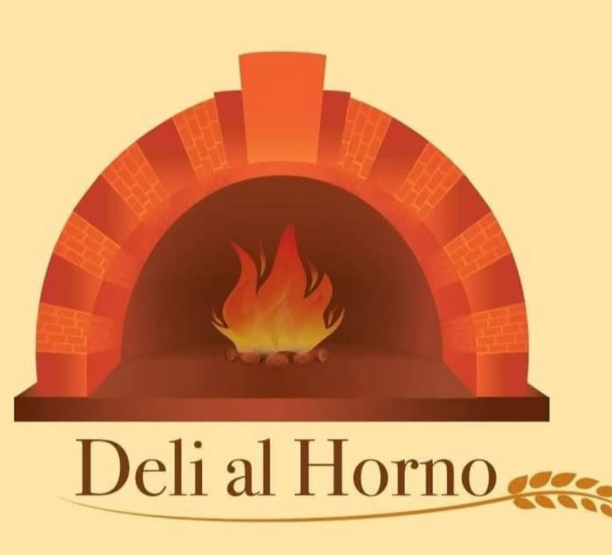

El Sabor de la Tradición
En el centro de Amealco, "Deli al Horno" se ha convertido en una parada obligatoria para locales y turistas. Este encantador negocio, liderado por la pasión y el talento de su fundadora, Tania, se dedica a rescatar y ofrecer los sabores más auténticos de la repostería y panadería de la región. Cada creación es un homenaje a las recetas familiares y al poder de los ingredientes locales.